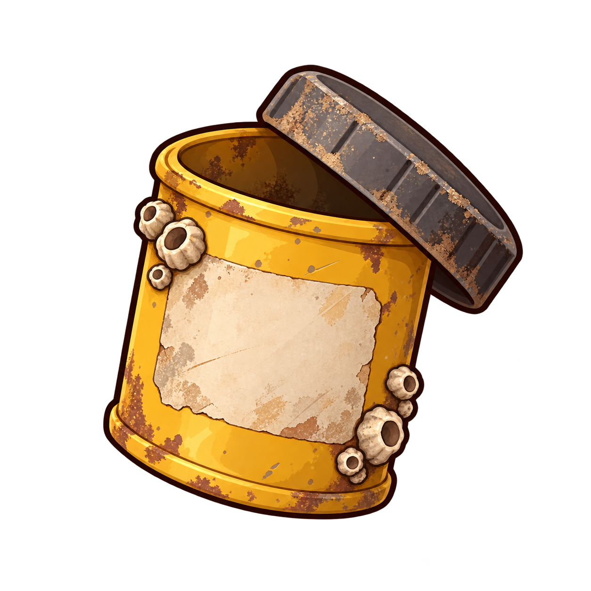
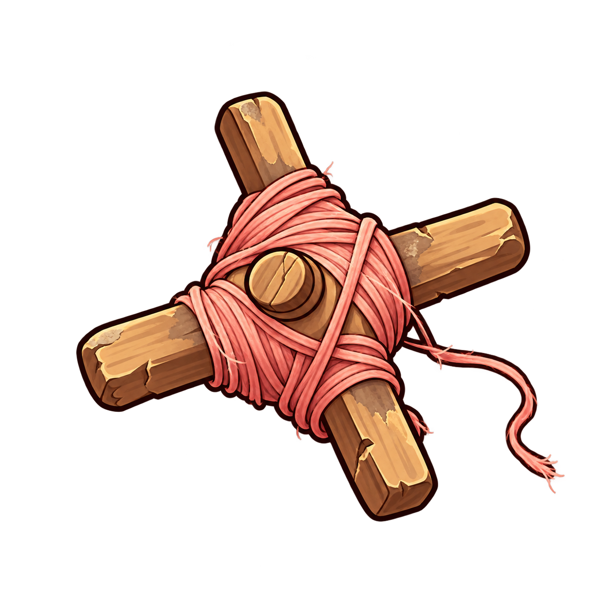
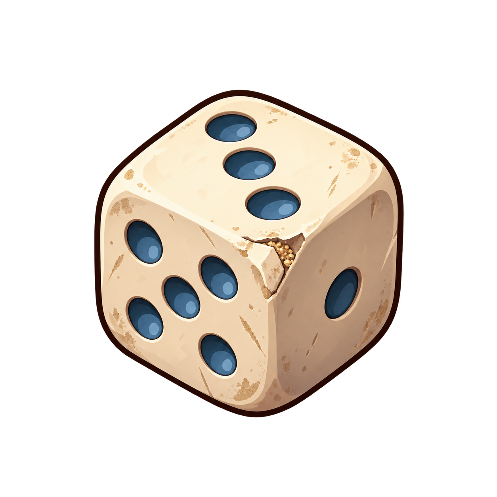
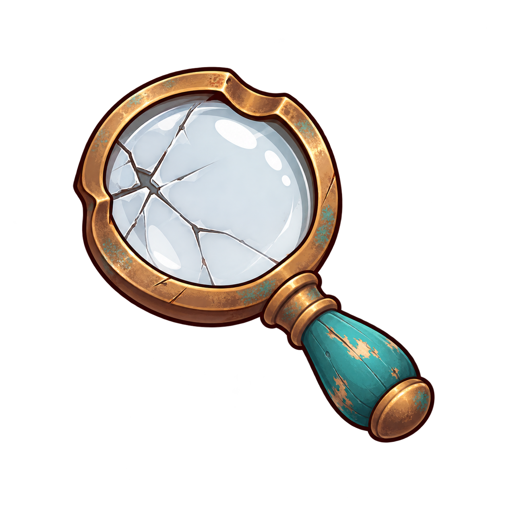
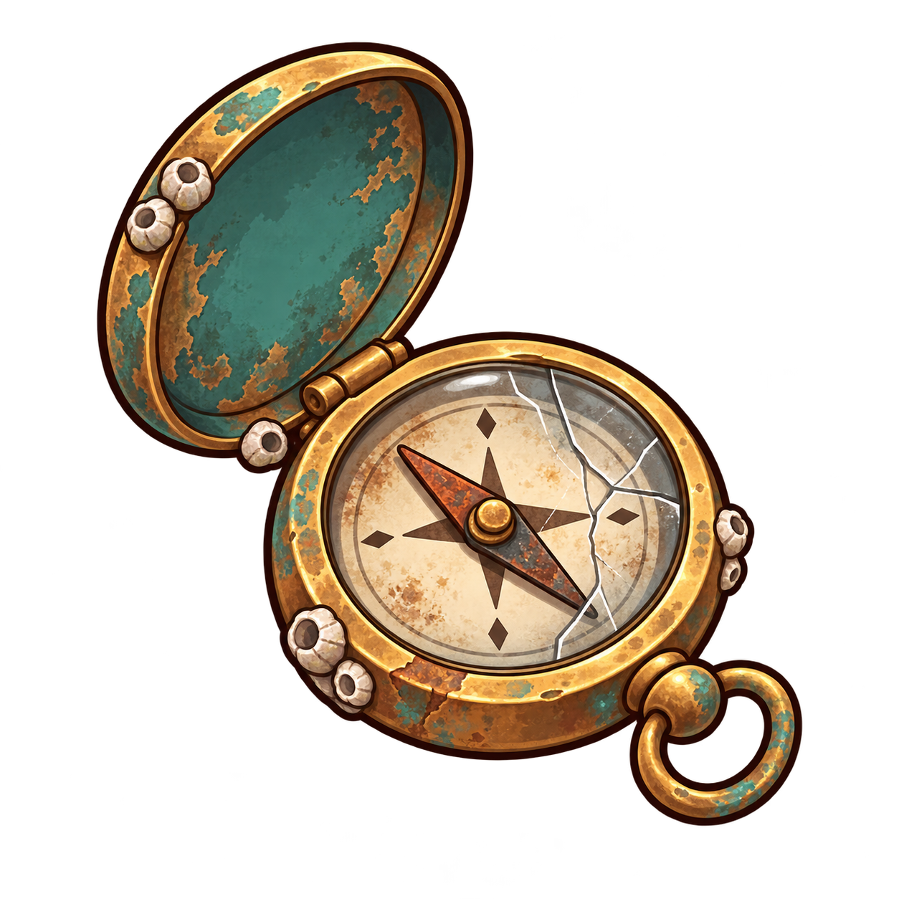

common
빛을 담던 필름은 사라지고 빈 통만 남았다. 닳은 뚜껑 안쪽에 작은 모래알이 굴러다닌다.

나무 얼레에 빛바랜 연실이 어지럽게 감겨 있다. 하늘로 향하던 실 끝이 이제 물결을 따라 흔들린다.

모서리 하나가 닳아 없어진 작은 주사위. 파란 눈금 사이로 누군가의 오래된 놀이가 남아 있다.

테두리가 살짝 휘어진 낡은 돋보기. 금 간 유리 너머로 보면 평범한 모래알도 낯선 보물처럼 보인다.

rare
바늘이 한 방향에 멈춰 버린 회중나침반. 돌아갈 길은 잊었지만 손때 묻은 황동빛은 아직 남아 있다.